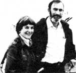

Paul Ehrlich (Bing Professor of Population Studies andProfessor of Biological Sciences, Stanford University) and AnneEhrlich (Senior Research Associate, Department of BiologicalSciences, Stanford) are familiar names to ecologists andenvironmentalists everywhere. As well they should be. Because itwas Paul and Anne who - through their writing and research- gave special meaning to the words "population","resources", and "environment"in the late 1960's. (They alsocoined the term coevolution, and did a lot to make ecology thehousehold word it is today.) But while most folks are aware ofthe Ehrlichs' popular writing in the areas of ecology andoverpopulation (most of us - for instance - have readPaul's book The Population Bomb ) . . . far too fewpeople have any idea of how deeply the Ehrlichs are involved inecological research (research of the type that tends to bepublished only in technical journals and college textbooks).That's why it pleases us to be able to present - on aregular basis - the following semi-technical column byauthors/ecologists/educators Anne and Paul Ehrlich.
The Lessons of Three Mile Island
Now that the dust and radioactivity have settled- and the laborious and dangerous cleanupis underway - it's time to take a look atthe lessons that can be learned from the neardisaster at ThreeMile Island.
A FRIGHTENING STORY
While the details of the complex accident are still notentirely understood, its basic outline is fairly clear. A sectionof the auxiliary system that was designed to supply cooling waterto the reactor core - in case of failureof the primary pumping system - had beenremoved from service by the closing of valves so that repairscould be made. However, through human error, the valves weren'treopened after the repairs were completed . . . leaving thebackup system cut off from the main system. Before this mistakewas discovered, an unrelated breakdown of the primary pump (whichis a fairly common occurrence) cut off the flow of cooling waterto the reactor core.
The pump of the auxiliary system started up as programmed butcould not supply water to the primary system because of theclosed valves. Sensors detected the problem and "scrammed" thereactor (in other words, the neutron-absorbing control rods wereimmediately inserted all the way to stop the chain reaction).This action, however, did nothing to solve the problem ofdisposing of the residual heat of radioactivity in the reactorcore . . . the problem on which the whole subject of emergencycore cooling systems (ECCS) is focused.
You may recall from our previous columns (MOTHER NO. 51, page154 and No. 52, page 118) that the heat present in a scrammedreactor core is, under most circumstances, capable of building inless than a minute to the point where the core starts to melt . .. after which a complete meltdown is probably inevitable. Themass of molten fuel then would melt through the floor of thecontainment building and could, under some conditions, release anenormous inven tory of radioactivity aboveground. The resultwould be the kind of accident that, under the worst conditions,is potentially capable of killing thousands of people immediatelyand hundreds of thousands more by delayed cancers, while makingstate-sized areas uninhabitable.
After the TMI reactor scrammed, mechanical failuresexacerbated the problem initiated by the original human error(the failure to reopen the valves on the secondary system . . .which was not corrected until a full eight minutes after thestart of the accident): A pressure-release valve stuck open, anda gauge that was supposed to register the level of water aroundthe core malfunctioned. . . showing more water than was actuallypresent (a condition astonishingly similar to that portrayed inthe movie The China Syndrome ).
Such mechanical problems, however, need not concern us. Thecrucial fact is that the reactor operators fixated on the singlemalfunctioning instrument and repeatedly switched the emergencycore-cooling systems on and off -attempting to control a water level that was being erroneouslyreported to them by the faulty gauge -while they simultaneously ignored numerous other instruments thatwere reporting an overheating core.
In actuality, the operators were permitting the water level todrop repeatedly (thus exposing part of the core) and then turningthe ECCS back on (partially reflooding the core). Through puredumb luck, there was sufficient steam around the core to cool itenough to prevent a meltdown. A further crucial bit of luck wasthe discovery that the auxiliary feed water system had beenvalved off. If this realization had been delayed by only a fewminutes, the chance of a meltdown occurring would have been evenmore probable.
Even with all that good fortune, the zirconium alloy claddingon some of the fuel rods melted, split, and reacted with thewater to produce hydrogen. Some 10 hours after the initial pumpfailure, a hydrogen explosion occurred, stressing the containmentbuilding to about half its tolerance.
The whole affair was a very close call indeed, according toRobert Budnitz (Deputy Director of the Office of NuclearRegulatory Research of the Nuclear Regulatory Commission) when hespoke at the Lawrence Berkeley Laboratory on October 19, 1979.After about 15 hours of mishandling of the accident, analystsfrom the NRC, the utility, and the reactor manufacturer finallyrealized what was being done wrong. They then instructedoperators to turn the ECCS on permanently . . . and started thesequence of events that ultimately brought the reactor undercontrol.
Even that sequence was not without its thrills, though . . .as operators tried to determine whether there was sufficienthydrogen in the system to cause another explosion that wouldbreach containment and release the lethal load ofradioactivity.
JUSTIFIABLE FEARS
Perhaps Three Mile Island's first lesson is that the concernswhich many of us have expressed about the safety of nuclearreactors are fully justified. A disaster that could have mademuch of eastern Pennsylvania (possibly including Philadelphia)uninhabitable and killed great numbers of Americans wasprevented, largely by luck. Only a moron would be reassured bythe fact that it didn't happen, and the nuclear establishment's ,propaganda is clearly falling mostly on deaf ears. The secondlesson that's been learned is that our concern about thecompetence of utilities to run plants as complex and dangerous aslight-water power reactors is also fully justified.
The reactor operators, as the report of the President's KemenyCommission detailed, were not remotely qualified to deal with theproblems confronting them. The conditions of reactor operatortraining, it turns out, were more primitive than even the mostcynical critics Imagined. With millions of lives and billions ofdollars' worth of equipment in their hands, the operators arepaid a maximum of $35,000 per year (about half the salary of asenior jet captain) and receive infinitely less training than,say, a pilot of a top-of-the-line jetliner who's entrusted with"only" a hundred or so lives and an apparatus worth a few milliondollars.
The operators do not, for example, get recurrent simulatortraining such as an airline pilot receives. Every six months apilot is thoroughly checked out, either in a real airplane or anextremely effective simulator, for his or her ability to handle awide variety of emergency situations: engine failures on takeoff,for example . . . complicated by simultaneous fires, instrumentmalfunctions, and so on. The pilot is expected to handle theentire sequence of such emergencies flawlessly.
It's integral to the training of all pilotsfrom privatethrough holders of air transport ratings-who operate underinstrument flight conditions that they learn never to depend onthe reading of a single instrument . . . or even oftwo-instruments. Such pilots are intensively trained to evaluatethe condition of the aircraft and its position by continuouslycross-checking a variety of instruments which operate ondifferent principles. Learning to expect and detect instrumentfailure is part and parcel of pilot training.
Had the nuclear reactor operators been trained to evenone-tenth the competence of a 727 pilot, Three Mile Island wouldhave been just one more incident in the thousands that occurannually in the reactor industry, rather than a close brush withcalamity.
INADEQUATE MONITORS AND CIVIL DEFENSE
Another lesson learned from the near-disaster is that theinstrumentation and procedures for monitoring releases ofradioactivity from nuclear power plants are wholly inadequate. Ithas proven impossible to ascertain the scale of radioactivereleases in the course of the Three Mile Island accident or thegeographic pattern of the resultant fallout. Therefore, thedosage received by the surrounding population can only be guessedat. (Fortunately, all the estimates are quite low.)
In addition, the TMI accident demonstrated the hopelessinadequacy of the civil defense apparatus that's depended upon toevacuate people from the vicinity of nuclear plants in case of alarge release of radioactivity (as would follow a full-scalemeltdown). The plans for evacuation made during the crisis weresketchy at best, and the apparatus for implementing them waswholly incapable of carrying out the task rapidly enough toreduce significantly the expected loss of life.
But perhaps most frightening of all was the attitude of theCommissioners of the NRC during the course of the drawnoutemergency. Roger Mattson (Director of the Division of SystemsSafety, Office of Nuclear Reactor Regulation, and one of the topNRC people on the scene of the accident) urgently recommendedthat evacuation be initiated immediately, as evidenced by tapedexcerpts from his phone reports to the Commission:
"It's a failure mode that has never been studied. It is justunbelievable . . . . My principle concern is that we have got anaccident that we have never been designed to accommodate, and[the situation] is - in the best estimate- deteriorating slowly . . . the mostpessimistic estimate is [that it's] on the threshold of turningbad. And I don't have any reason for not moving people .... Idon't know what you're protecting by not moving people . . . . Ithink we ought to be moving people."
Yet the reaction of the Commissioners was clearly to worryabout what an evacuation would do to the "credibility" of thenuclear industry. They should, of course, have been- purely and simply- concerned with the balance betweensocial disruption (including the probably small, if any, loss oflife that would accompany an evacuation) and the potentiallycatastrophic loss of life had the reactor melted down.
It seems clear that, considering the information available atthe scene, the proper move would have been to evacuate . . . eventhough luck prevented a total meltdown. The position of those whoclaim otherwise is equivalent to that of a school bus driver whoknowingly coasts down a long, winding hill without any brakes,battering the children as he or she careens around curves, andthen at the bottom says, "See, it was all right. None of them gotkilled, so there was certainly no reason to let them out at thetop of the hill."
A BENEFICIAL NIGHTMARE
Overall, though, the long-range effects of the Three MileIsland accident should prove to be beneficial. Although the exactdegree of injury to the general public is unknown, it almostcertainly was small, especially in comparison to what it couldhave been. Attempts will now be made to upgrade thequalifications, training, pay, and prestige of people who becomenuclear reactor operators . . . as well as to improve the meansof monitoring their performances.
Reactor control room simulators do exist, and could be easilyintegrated into a program of recurrent training similar to thatnow required of airline pilots. Indeed, there are manysimilarities between the two jobs . . . not the least of which ispointed out by a description of flying -commonly quoted by pilots - as "many hoursof boredom punctuated by moments of sheer terror". Both pilotsand reactor operators earn their pay in those moments of sheerterror . . . and the next time, we hope, the latter group will beup to their task.
Similarly, there's some sign that other aspects of reactorsafety will be tightened up, emergency evacuation plansdeveloped, and the NRC restructured so that there's animprovement in its overseeing functions. (However, it seemsunlikely that political pressures will be eased enough to let theNRC do its job really well.) Indeed, even the Kemeny Commissionreport made every attempt to soft-pedal the numerous mechanicalflaws in the power plant, while emphasizing the fumbling actionsof the operators and the bungling of the NRC.
Many experts, for example, insist that all TMI-type Babcockand Wilcox reactors should be taken off line immediately untiltheir steam generators can be replaced with those of a designless sensitive to the kinds of events that took place at ThreeMile Island. It would be an enormously expensive modification andwould-undoubtedly-involve considerable discomfort to the publicin some areas where the supply of electricity would be reduced .. . but the alternative, in the opinion of some experts in thefield, is an unacceptably high risk of meltdown. Yet at thiswriting it appears that such plants will be allowed to continueto function without modification.
Perhaps the greatest benefit from the Three Mile Islandaccident, though, will be a general weakening of the public'sconfidence in nuclear power and the development of more healthycynicism about the statements of members of the nuclearestablishment.
Although a barrage of misstatements and lies are now beingcirculated to the effect that the accident proved how safe thereactors are, it's clear that most of the general public is nolonger fooled. Realization is spreading that, at present, thesafety of light-water power reactor technology is hopelesslyinadequate and that the most prudent course of action would be tophase out such reactors as rapidly as is consistent with publicsafety and welfare.
Reactor safety is, of course, only one of the reasons formoving away from fission as a major source of energy. The othersinclude the waste problems (as discussed in Ecoscience, MOTHERNOS. 54 and 55) andmuch more importantthe problems of nuclearproliferation (the ways in which such power plants contribute tothe spread of atomic weapons to countries and subnationalterrorist groups), plus the problem of overcentralization ofenergy technology . . . issues that we'll discuss in futurecolumns.
But as it stands now, it would seem that Three Mile Island wasa colossal disaster for those who would promote nuclear powerwithout any long-term view of human needs and a considerablebonanza for the rest of us who would like to see a sustainablesociety established on this planet.
More details on the Three Mile Island accident can befound in "Kemeny Report: Abolish the NRC", Science, vol. 206,November 19, 1979, page 796. A nice summary of the problem ofinadequate operators can be found in the Wall Street Journal,October 22, 1979.
For a description of the design of nuclear reactors and anoverview of nuclear power, see Ecoscience: Population, Resources,Environment by Paul R. Ehrlich, Anne H. Ehrlich, and John P.Holdren ($19.95 postpaid from W.H. Freeman and Co., Dept. TMEN,660 Market Street, San Francisco, California 94104).
We would like to thank Professor John Holdren of theEnergy and Resources Group, University of California, Berkeley,for once again lending us his expert judgment on issues relatedto nuclear power.
|
 |
|
|